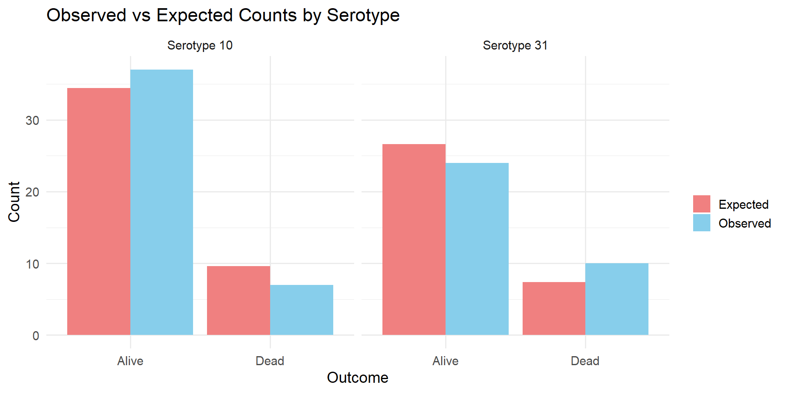
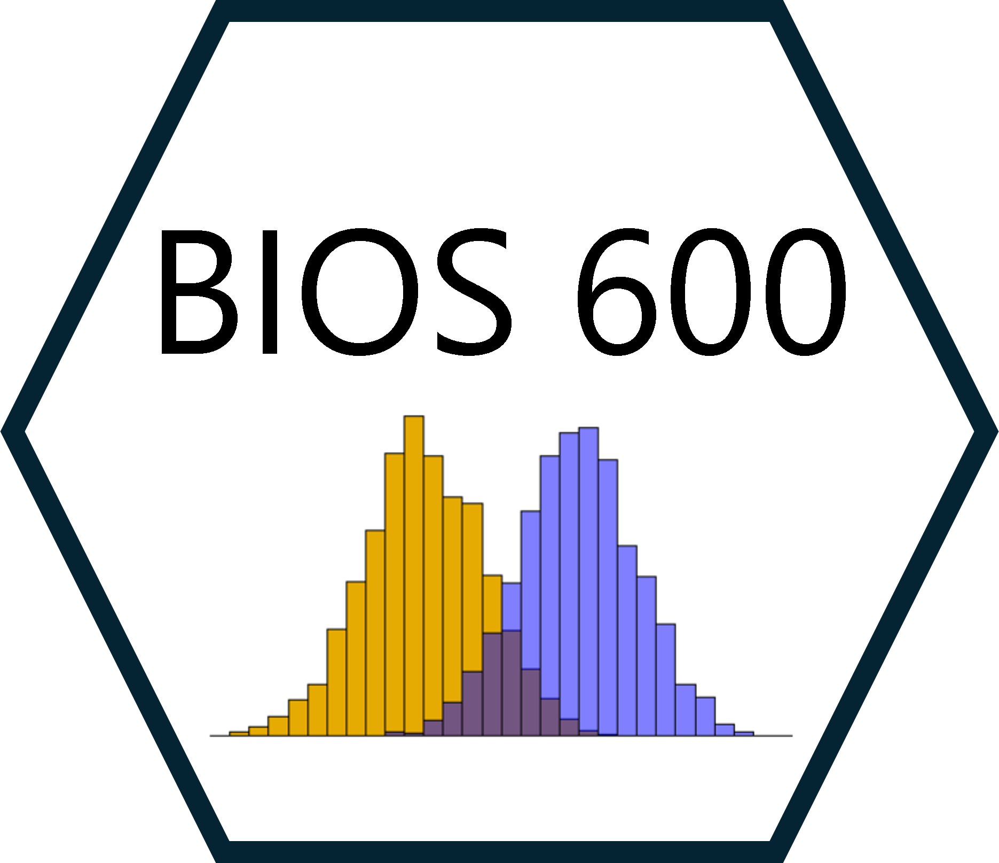

[1] 34.41026BIOS 600 - Spring 2026
Lab 5 session today. Watch the video ahead of time and attend at 3:30 if you need help.
Lab 5 due Tuesday 10/21 at 11:59pm (due to fall break)
No HW until next week - enjoy your fall break!
Review AE 03 from last time.
Chi-square test and example
Fisher exact test and example
P&G Chapters 14, 15
OI: Sections 5.2, 5.3, 6.1, 6.2, 6.4
AE 03
In small groups, take a few minutes to review AE 03.
If you’re already done, take turns presenting the exercises to a partner (explain the code, explain how you got your conclusion.)
If you still need some time to work on it, take this time to do so.
The World Health Organization estimates that in developing countries 814,000 children under the age of five die annually from invasive pneumococcal disease (IPD), with an estimated 1.6 million deaths affecting all ages globally.
Several recent studies have identified associations between pneumococcal serotypes (species variations) and patient outcomes from IPD. We consider data from a study of pneumococcal serotypes and mortality (Inverarity et al. (2011)).
| Serotype | Alive | Dead | Total |
|---|---|---|---|
| Serotype 10 | 37 | 7 | 44 |
| Serotype 31 | 24 | 10 | 34 |
| Total | 61 | 17 | 78 |
Is there an association between serotype and mortality?
\(H_0\): There is no association between serotype and mortality
\(H_1\): There is an association between serotype and mortality
Under \(H_0\), we have independence between serotype and mortality, implying that joint probabilities should be equal to products of marginal distributions:
| Serotype | Alive | Dead | Total |
|---|---|---|---|
| Serotype 10 | ? | ? | 44 |
| Serotype 31 | ? | ? | 34 |
| Total | 61 | 17 | 78 |
What counts might we expect under \(H_0\)?
Suppose we look at two variables: Serotype and Mortality (Alive or Dead).
The joint probability describes the probability of being in both categories (e.g., “Serotype 10 and Alive”).
The marginal probabilities describe totals across one variable:
| Serotype | Total |
|---|---|
| 10 | 44 |
| 31 | 34 |
| Total | 78 |
| Outcome | Total |
|---|---|
| Alive | 61 |
| Dead | 17 |
| Total | 78 |
\[ P(\text{Serotype 10 and Alive}) = P(\text{Serotype 10}) \times P(\text{Alive}) \]
For example:
\[ E_{10,Alive} = P(\text{Serotype 10}) \times P(\text{Alive}) \times N \]
\[ P(\text{Serotype 10}) = \frac{44}{78}, \quad P(\text{Alive}) = \frac{61}{78}, \quad N = 78 \]
[1] 34.41026We can repeat this for each cell to find what we’d expect if serotype and mortality were truly unrelated.
The chi-square test then measures how far our observed counts deviate from these expected counts.
\[\chi^2 = \sum\frac{(O-E)^2}{E}\]
If observed counts are close to what we’d expect under independence, \(\chi^2\) will be small, then we’d fail to reject \(H_0\).
If they’re far from expected, \(\chi^2\) will be large, which might lead to evidence of an association.
Let’s visualize how the observed counts compare to the expected counts under independence.

The chi-square test compares the observed frequencies in each cell to the expected count under \(H_0\); if the total differences are large enough, we reject \(H_0\):
\[\chi^2 = \sum_{i=1}^{r \times c}\frac{(O_i - E_i)^2}{E_i}\]
which has a \(\chi^2_{(r - 1) \times (c-1)}\) distribution, under \(H_0\).
[,1] [,2]
[1,] 37 7
[2,] 24 10
Pearson's Chi-squared test with Yates' continuity correction
data: data
X-squared = 1.3359, df = 1, p-value = 0.2478What might we conclude at \(\alpha = .05\)?
The chi-square test relies on asymptotic results (i.e. large sample size), which might not be appropriate if we have small cell counts (common rules of thumb are >5 or >10 observed in each cell).
Fisher’s exact test calculates an exact p-value under a specific distributional assumption.
| Serotype | Alive | Dead | Total |
|---|---|---|---|
| Serotype 10 | 37 | 7 | 44 |
| Serotype 31 | 24 | 10 | 34 |
| Total | 61 | 17 | 78 |
Fisher’s exact test relies on the hypergeometric distribution (don’t worry about this, seriously).
| Serotype | Alive | Dead | Total |
|---|---|---|---|
| Serotype 10 | a | c | a + c |
| Serotype 31 | b | d | b + d |
| Total | a + b | c + d | a + b + c + d |
Conditionally on the margins (assumed fixed), then each of the individual cells is distributed according to the hypergeometric distribution. We can thus calculate the exact probabilities of obtaining specific tables.
Observed data:
| Serotype | Alive | Dead | Total |
|---|---|---|---|
| Serotype 10 | 37 | 7 | 44 |
| Serotype 31 | 24 | 10 | 34 |
| Total | 61 | 17 | 78 |
We could use the hypergeometric distribution to calculate the probability of seeing this table, assuming 61 total alive patients, 17 dead, and 44 and 34 infections of serotypes 10 and 31, respectively (lots of factorials, so you could imagine it wasn’t fun before modern computers).
Another “possible” table:
| Serotype | Alive | Dead | Total |
|---|---|---|---|
| Serotype 10 | 36 | 8 | 44 |
| Serotype 31 | 25 | 9 | 34 |
| Total | 61 | 17 | 78 |
Here we’ve displayed another table with the same margins, but with some slightly different potential cell counts.
Again we could use the hypergeometric distribution to calculate the probability of observing the cell counts conditionally on fixed margins.
Fisher’s exact test relies on constructing all possible contingency tables with the same margins, and then summing up probabilities of all tables as extreme or more extreme than the observed data.
Question
What might “more extreme” mean in the context of contingency tables?
\(H_0\): The proportion of deaths is the same for Serotype 10 and Serotype 31 (no association between serotype and outcome).
\(H_A\): The proportion of deaths differs between serotypes (there is an association)
Fisher's Exact Test for Count Data
data: data
p-value = 0.1758
alternative hypothesis: true odds ratio is not equal to 1
95 percent confidence interval:
0.6465347 7.7636744
sample estimates:
odds ratio
2.179552 The Fisher’s Exact Test yielded a p-value of 0.17, which is greater than the conventional significance level of 0.05. Therefore, we fail to reject the null hypothesis.
There is no statistically significant evidence of an association between serotype and survival status in this sample.
| Serotype | Alive | Dead | Total |
|---|---|---|---|
| Serotype 10 | 37 | 7 | 44 |
| Serotype 31 | 24 | 10 | 34 |
| Total | 61 | 17 | 78 |
Odds of death among serotype 10 patients = \(\frac{7/44}{37/44} = 7/37\)
Odds of death among serotype 31 patients = \(\frac{10/34}{24/34} = 10/24\)
Odds ratio of death comparing 31 to 10 is thus \(\frac{10/24}{7/37} \approx 2.2\)
| Serotype | Alive | Dead | Total |
|---|---|---|---|
| Serotype 10 | 37 | 7 | 44 |
| Serotype 15 | 60 | 12 | 72 |
| Serotype 20 | 97 | 9 | 106 |
| Serotype 31 | 24 | 10 | 34 |
| Total | 218 | 38 | 256 |
We can also extend the chi-square test and Fisher’s exact test to more general contingency tables (although the notion of an odds ratio no longer makes sense here).
Suppose we were interested in whether a particular training regimen was associated with “success” as measured by whether an athlete qualified for being on the US Winter Olympic Team for giant slalom.
| Qualified | Did Not Qualify | |
|---|---|---|
| New Regimen | 129 | 97 |
| Old Regimen | 112 | 114 |
Pearson's Chi-squared test with Yates' continuity correction
data: data
X-squared = 2.2755, df = 1, p-value = 0.1314Practice
Write out the code to 1) construct the data matrix and 2) to conduct a chi square test in R. What might we conclude using alpha = .05?
Reviewed AE 03 from last time.
Chi-square test and example
Fisher exact test and example (use if sample sizes aren’t large enough)
Tuesday’s class: Non-Parametric Methods
Enjoy Fall Break!
